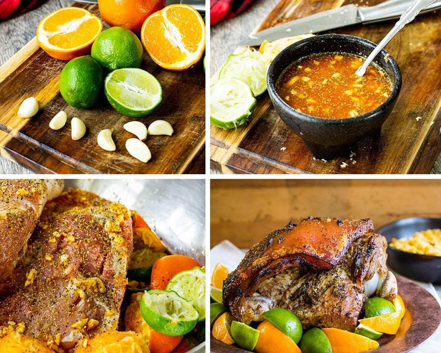

Pernil

Description
This crispy pork dish is a staple at any large gathering in my family.
Ingredients
- 8lb Pork Shoulder
- 1 Orange juiced
- 3 Limes juiced
- 7 Garlic cloves
- 1t Sazon Goya
- 1t Oregano
- 1t cumin
- 1T Kosher salt
- 2t Black pepper
Instructions
- Preheat oven to 350 degrees F
- To make the marinade, combine the orange juice, lime juice, minced garlic, oregano, Sazon goya, cumin, salt, and pepper.
- Remove the pork skin 3/4s of the way and make several 1-inch cuts into the pork.
- Pour the marinade all over the pork except for the skin. The pork skin should remain completely dry. Make sure those garlic chunks get inside the slits.
- Place the skin back in place, pat dry the skin with a paper towel, you want it to be extra dry. Season it with salt and pepper, cover it with aluminum foil, bake for 4 hours. Once the four hours are up, uncover and bake for 1 hour. After the 1 hour, increas the temperature to 450 degrees F and cover for 15-20 minutes or until the skin is nice and cwispy.
- Once the skin is crispy, remove the pork from the oven and let rest for 15 minutes. Slice off the skin and set it aside. shred the meat and place it in the pan with the juices. Make sure not to get the juices on the skin to retain maximum CWISP!